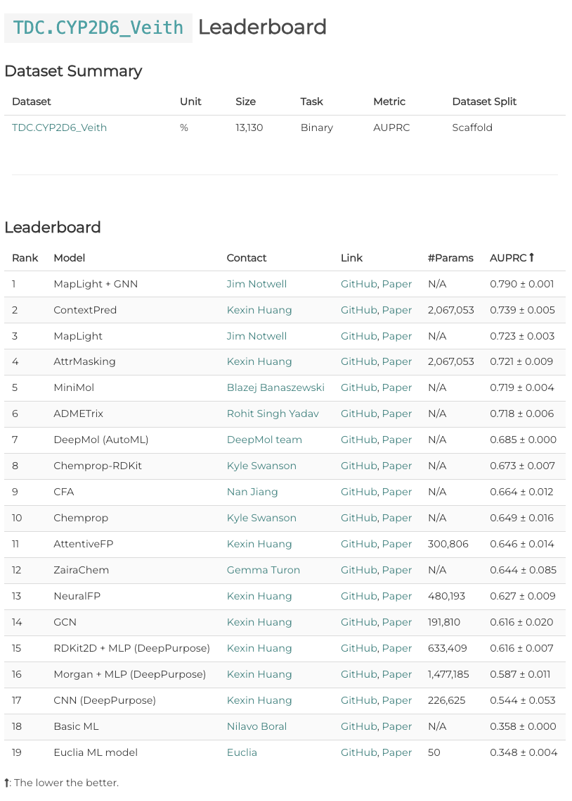
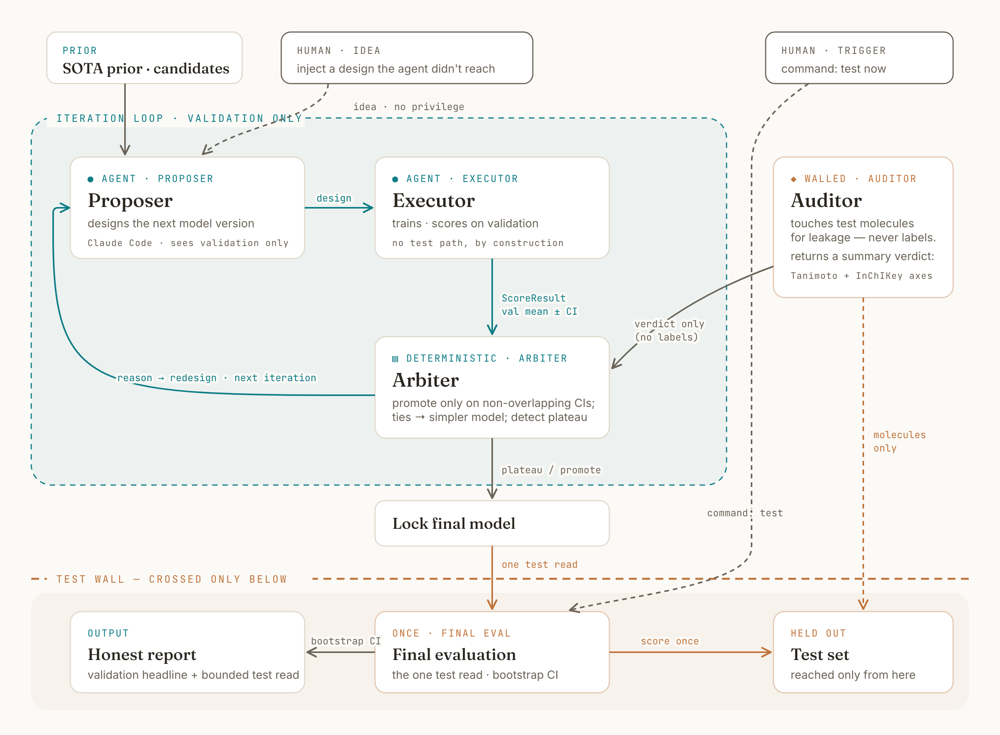
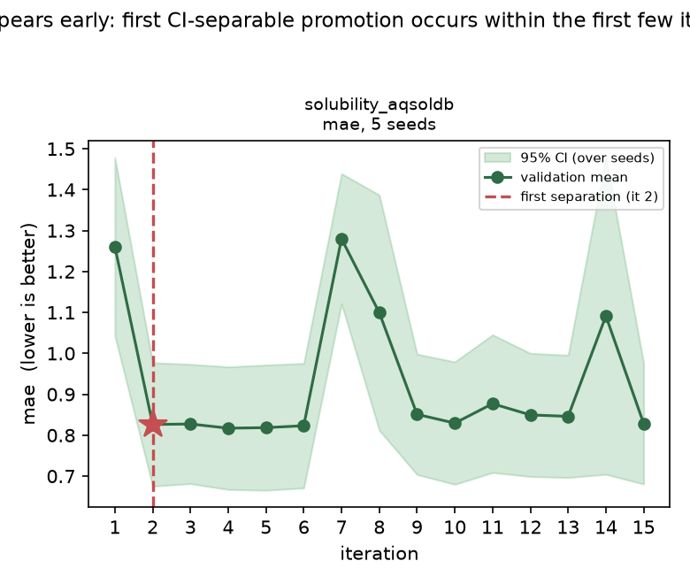
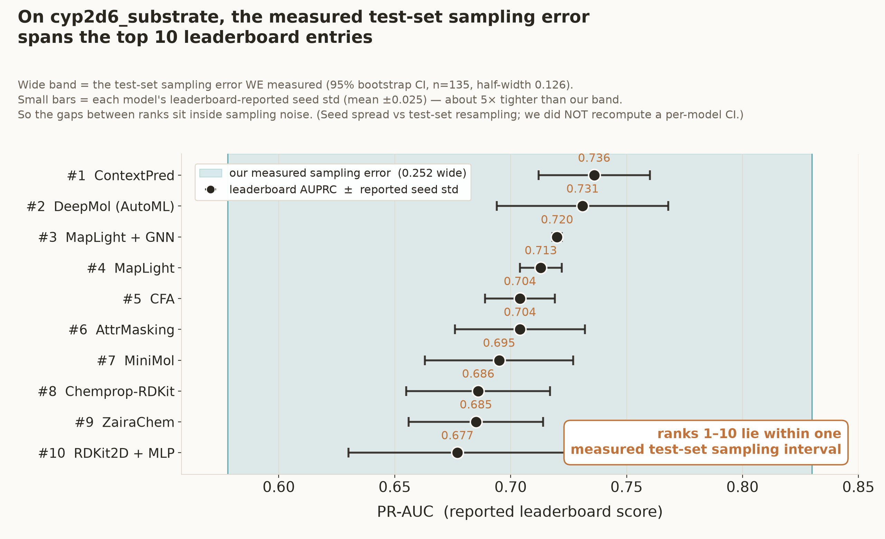
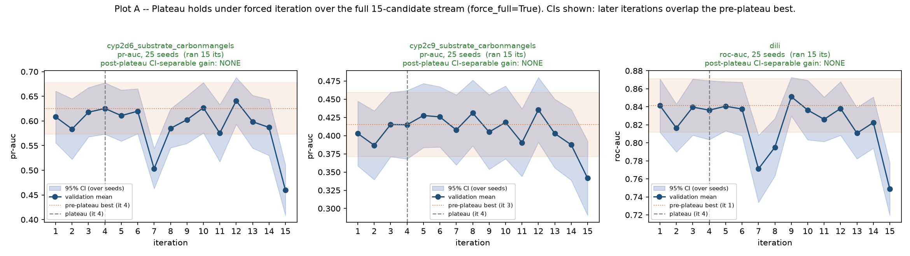

An AI agent that improves drug-property prediction models honestly, and audits the benchmark's integrity while it does.
Title on screen. Say the one-liner: an AI agent that improves drug-property models honestly, and audits the benchmark while doing it. (Optional: face on camera here only.)
The problem
02 / 09
Leaderboards look precise. Often they aren't.
TDC ADMET is a standard leaderboard ranking machine-learning models on drug properties — solubility, toxicity, permeability.
A 2026 audit found most top entries fail reproducibility or leak test data — and that overfitting the open test set is a reliable way to climb.
So a high rank may reflect overfitting, not a better model.

figure · leaderboard screenshotModels ranked 1…N with tight-looking error bars — the opening image of the bookend.drop in → figures/leaderboard.png
Say what TDC ADMET is in one sentence. Then the audit finding: most top entries fail reproducibility or leak, and overfitting the test set climbs the board. Land: a high rank may not mean a better model.
What we built
03 / 09
One agentic loop that climbs and audits — the test set walled off.

Two things at once: climb (improve models) and audit (check leakage, report honest uncertainty). ONE architecture sentence: the part that can see the test set cannot influence the part that designs models — the diagram shows the wall. Built with Claude Code. Don't read every box; point at the loop and the wall.
Finding 1 · signal is early or absent
04 / 09

figure · Plot BSignal appears early: MAE drops sharply at iteration 2, then flat. Star marks the first CI-separable promotion.drop in → figures/plotB_signal_appears_early.png
Where there's signal, it shows up at once.
Across 10 endpoints, models measurably separated in only three — always the same physically sensible move. Elsewhere they were statistically indistinguishable, and the agent said so instead of inventing a winner.
Real signal appears immediately; iterating doesn't summon it.
Show Plot B. Narrate: separations happened in only 3 of 10 endpoints, always the same descriptor move, appearing at iteration 2. Everywhere else, honest ties. Signal is early or not at all.
Finding 2 · the headline
05 / 09
One statistical cluster, wearing a ranking.

THE headline. On this small endpoint the test-set sampling error WE measured (bootstrap CI, ~0.25 wide) covers all ten top leaderboard entries — while the leaderboard's own reported seed std is ~5x tighter. The fine-grained ranking is inside sampling noise: one statistical cluster wearing a ranking. (Band = our measured CI; bars = their reported seed std; we did NOT recompute a CI per model.)
The discipline · caught in the act
06 / 09
It caught its own inflated result.
Our agent's own model posted a test score of 0.70 — competitive with rank one. Then it caught itself: that was a lucky test-set draw. The honest value was 0.59. It reported the lower number and flagged the gap.
The exact move that inflates leaderboards — caught on its own output.
0.70→0.59
apparent test score → honest generalization estimate
The memorable moment. 0.70 looked competitive with rank one. The agent diagnosed it as a favorable test-set draw, honest value ~0.59, and reported the lower number. The thing that sinks leaderboards, caught on its own output.
The discipline · stress-tested
07 / 09

figure · Plot APlateau holds under forced iteration: 15 attempts, means wobble, 95% CI bands all overlap the pre-plateau best. "Post-plateau gain: none."drop in → figures/plotA_plateau_holds.png
We tried to break it. It held.
"You only tried a few models." So we forced fifteen distinct, legitimate models past the plateau. None separated. When the luckiest looked slightly better on average, the confidence-interval rule refused to credit it.
More search didn't manufacture a win — the discipline wouldn't let it.
Show Plot A. Narrate: the obvious challenge is "too few models." We forced 15 legitimate models past the plateau; none separated; the best-mean one was correctly rejected as noise by the CI rule. More search didn't manufacture a win.
What it means
08 / 09
Not a better model — a way to model without fooling yourself.
An AI agent can do the iterative modeling work without the test-set overfitting that compromises the benchmark, and audit the benchmark's integrity as it goes.
The vision — the same pipeline, run as new models are submitted, is a standing integrity check on a leaderboard, not another entry gaming it. It packages as a reusable Claude Code tool.
The thesis: not a better model, a demonstration that an agent can model without the overfitting, and audit integrity as it goes. Vision: a standing leaderboard auditor / reusable Claude Code tool.
Reproducible · close
09 / 09
Everything reproduces from a fresh clone.
The pipeline, the 10-endpoint findings, and the data — clone, install, run, on a standard laptop. Verified on macOS.
github.com/deweihu96/admet-honest-audit
figure · bookendThe finding from slide 5, returned to as the close — the measured sampling error spanning the top 10 ranks.figures/leaderboard_sampling_overlap.png
Close. One line: everything reproduces from a fresh clone, verified on a laptop. Repo on screen. Optional: return to the leaderboard image, now showing the statistical tie — bookend.